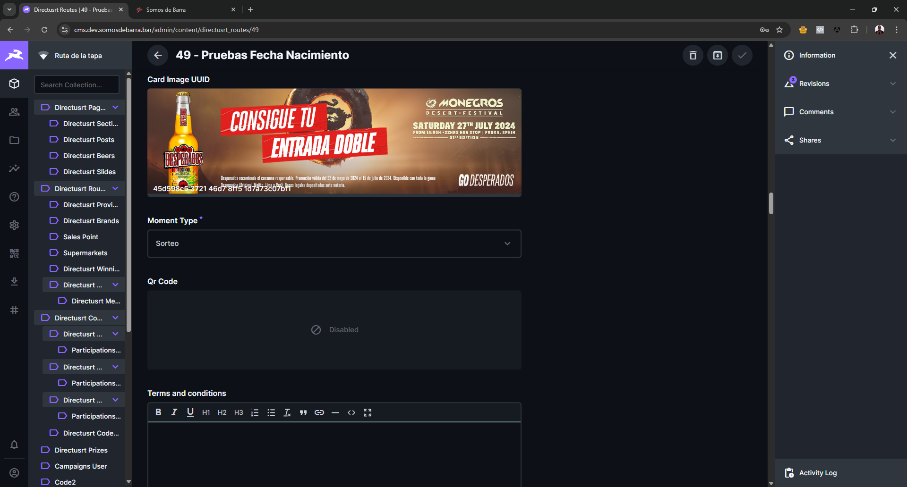
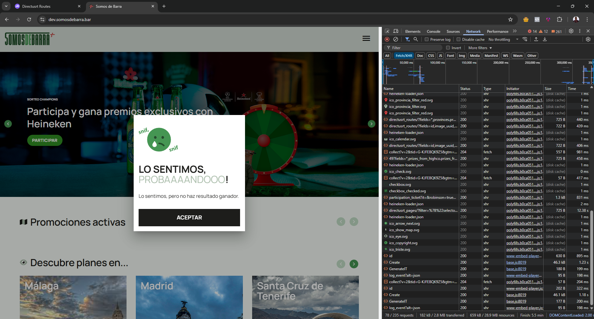
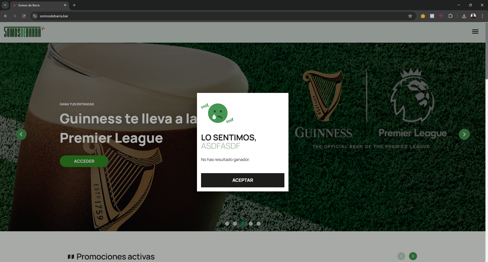
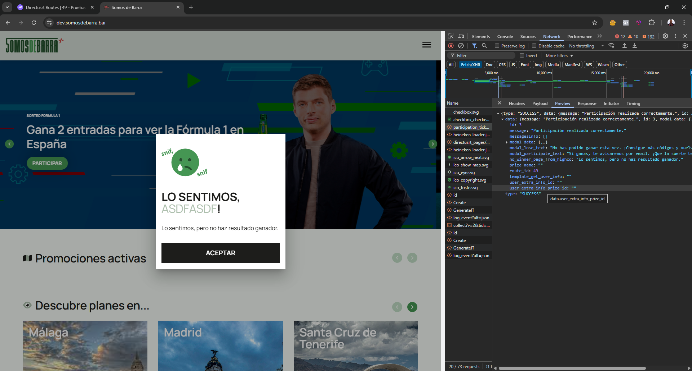

Somosdebarra.bar (Becomeyoo)
Soporte freelance externo ofrecido a Becomeyoo (España), agencia que desarrolla para Heineken, en el sitio somosdebarra.bar. Se realizaron personalizaciones a la plataforma Directus 10 mediante extensiones, destacando una extensión capaz de manejar más de 30 millones de códigos de promoción, además de múltiples funciones personalizadas sobre Directus 10. Adicionalmente, se trabajó en la modificación y mejoras de la aplicación frontend, con el maquetado de componentes para la versión 2025 del sitio.
Algunas capturas de pantalla del sistema



